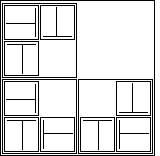

| Use the 2 by 2 squares, three at a time, to make the second stage. |
| Orient and position the 2 by 2 squares to fit the fractal pattern and attach them by taping between the squares on their backs. |
| Fill in the empty quadrant with blank paper to make a complete 4 by 4 square. You should have 121 of these 4 by 4 squares. |
| Attach one to the wall to the right of the first stage. |
|  |
| Three 2 by 2 first stages combined to make a 4 by 4 second stage, with the upper right quadrant filled in with blank paper to make a complete square. |
Return to Procedure